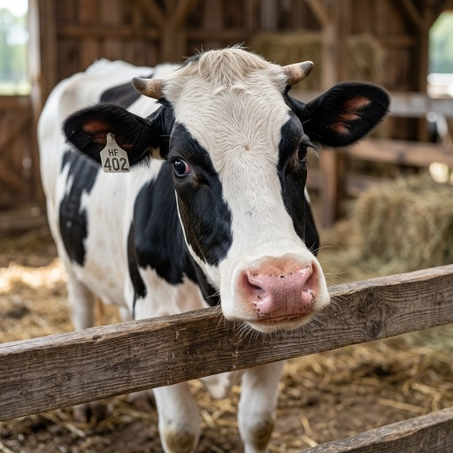

Motor de Requerimientos Nutricionales • Sistema Métrico (kg) • NASEM 2021
Modo de Audiencia:Aplica a la Calculadora
📖 ¡Muu-siario! Toca para ver el glosario

👍¡BIEN!
Desliza para ver más funciones →
VISTA TÉCNICA ACTIVA
Evaluación Bioquímica Rigurosa de Nutrición de Rumiantes
Acceso a ecuaciones NASEM 2021 (8ª Edición), guías Cornell CNCPS 2023, energía neta en Mcal/kg MS, proteína metabolizable (MP) y mineralograma expresado en unidades kg/g/mg.
Calculadora de Requerimientos
Fórmulas 100% en kg
💾 Escenarios guardadosSe guardan solo en este navegador, no se envían a ningún servidor
Aún no has guardado ningún escenario.
Requerimientos Calculados
Calculado en Tiempo Real (kg)
⚖️ Balance Energético (EB)
Compara la energía neta que la vaca consume contra lo que necesita para mantenimiento, gestación (si aplica) y producción de leche. Aplica a vacas en lactancia.
NASEM (2021) Cap. 3, Ec. 3-15a a 3-18, pp. 31-32; Cunha et al., J. Dairy Sci. 109 (2026)
Herramienta educativa, no prescriptiva. Las estimaciones de peso, energía, materia seca, agua y dosificación aplicadas a la nutrición de ganado de leche y carne no sustituyen la evaluación de un médico veterinario o nutricionista especializado en rumiantes. Valide la ración completa, el estado clínico del animal y la etiqueta vigente de cada insumo antes de tomar decisiones.
Consulta y Cálculo de Requerimientos Minerales (NASEM 2021 Cap. 7)
Sincronizado con Calculadora
🧪 Macrominerales (Haz clic en una fila para seleccionar)
Elemento
Requerimiento / kg MS
Consumo Diario Total
🔬 Microminerales (Haz clic en una fila para seleccionar)
Elemento
Requerimiento / kg MS
Consumo Diario Total
🚦 Riesgo Homeostático: Zinc, Cobre y Manganeso
Daniel & Martín-Tereso, J. Dairy Sci. 109:6239-6251 (2026)
Compara el aporte real de la dieta contra el rango entre el requerimiento neto (NASEM, ya calculado arriba) y el límite superior de seguridad, para detectar déficit o riesgo de sobrecarga homeostática.
⚔️ Interpretador de Antagonismos Minerales
Orientativo, no estándar NASEM
Evalúa si la combinación de molibdeno y azufre de la dieta puede estar bloqueando la absorción de cobre.
Calculadora de Balance Anión-Catión (DCAD / BAC) en Preparto (NASEM 2026)
Prevención de Hipocalcemia
Ecuación Oficial de Balance Cationico-Aniónico (DCAD)
Relación Óptima de Ácidos Grasos Poliinsaturados (AGPI Ω-6 : Ω-3)
Meta Reproducción y Calidad de Ovocito/Embrión (FIV): Grasa Total = 5.0 - 7.0% de la MS | Grasa Inerte Protegida = 1.5 - 3.0% MS (300-500 g/d en sales de Ca) | Relación Ideal Ω-6 : Ω-3 = 4.0 : 1.0 a 5.0 : 1.0.
Rol Ω-6 (Linoleico C18:2): Involución uterina, ciclicidad e inducción de PGF2a posparto
Rol Ω-3 (Linolénico, EPA, DHA): Supresión de PGF2a pre-implantacional, sobrevivencia embrionaria y calidad en FIV
Límite Grasa Ruminal No Protegida: ≤ 3.5 - 4.0% MS (para prevenir cubrimiento de fibra y toxicidad ruminal)
💬 Asistente de Consultas y Preguntas Frecuentes en Nutrición Animal
Basado en Base de Datos Oficial
Haz cualquier pregunta sobre nutrición de rumiantes (DMI, DCAD, agua, aminoácidos CNCPS, fibra uNDF240h, eficiencia alimenticia FE, ácidos grasos Omega-6/3, dietas de vacas secas o requerimientos minerales). El asistente verificará y responderá con base estricta en nuestra base de datos empírica.
Tabla Comparativa de Perfiles Estándar (NASEM 2021 vs. Beef Cattle)